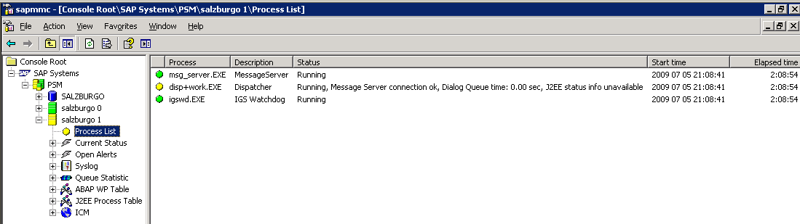
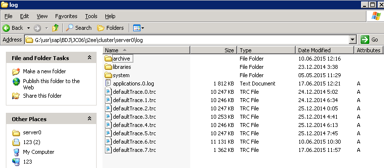
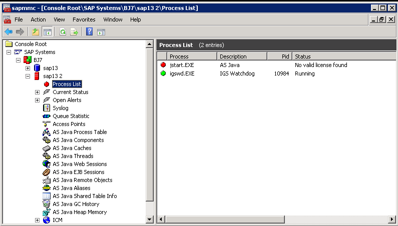
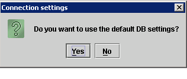
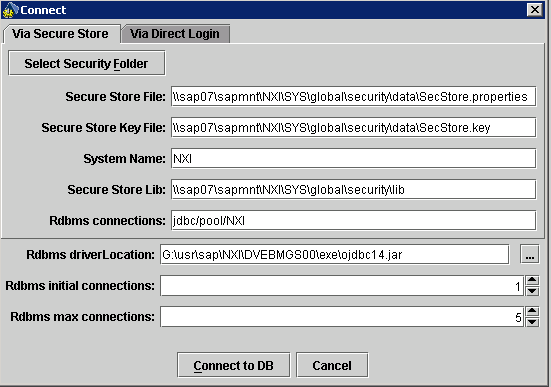
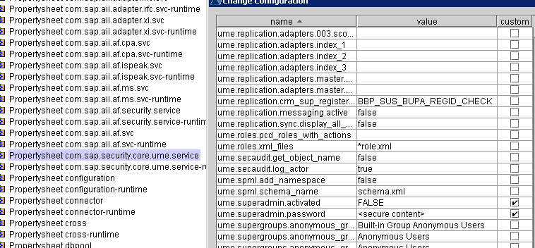
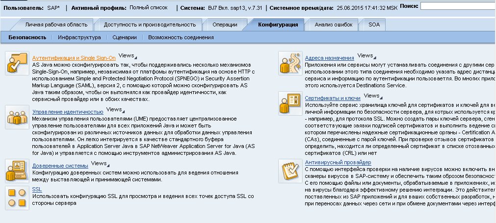
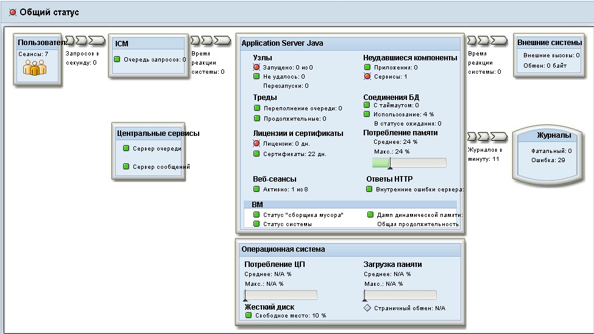

В этом посте я хочу рассказать инструментах для исправления ошибок возникающих при запуске SAP AS JAVA. Большая часть ошибок с которыми я сталкивался заключалась в неверной конфигурации UME или отсутствием доступа к БД.
Выглядеть для DUAL STACK системы, например SAP Solution Manager, это может так:

Поначалу я пытался искать ошибки в файлах трассировки ядра и рабочих процессов которые система пишет в директорию work
/usr/sap/(SID)/(Inst_name)/work для *nix систем (Drive):\usr\sap\(SID)\(Inst_name)\work для Windows
Это хорошо работает для AS ABAP но трассировки рабочих процессов ядра Java — dev_server0, dev_jcontrol, jvm_server0, jvm_dispather и т.д., обычно дают мало полезной информации.
Гораздо больше информации об ошибках можно получить в трассировках AS JAVA которые находятся в файлах вида DefaultTrace.N.trc по адресу
.../(SID)/(Inst_name)/j2ee/cluster/server0/log для *nix систем ...\(SID)\(Inst_name)\j2ee\cluster\server0\log для Windows

Ошибки могут быть самыми разными, JAVA может не видеть базу данных из-за слетевших настроек, может быть неверно сконфигурирован data store в UME, может закончится лицензия.
Проще всего разобраться с лицензией, достаточно просто перезапустить инстанцию. Затем у нас будет пол часа чтобы установить в систему новую лицензию до тех пор пока JAVA не перестанет работать.

Далее речь пойдет об инструментах конфигурации SAP AS JAVA при помощи которых можно исправить описанные ошибки.
Инструменты конфигурации AS Java
Java ConfigTool
Это основной инструмент конфигурации. Может работать в трех режимах:
-
Online — обычный запуск GUI инструмента.
-
Console — запуск в текстовом режиме, подходит для работе в удаленной консоли
-
Offline — запуск в графическом режиме при котором не требуется работающий AS JAVA, конфигурация считывается из БД напрямую.
Через ConfigTool мы можем проверить и скорректировать подключение к БД выбрав No в предложении использовать настройки БД по умолчанию


При помощи ConfigTool можно внести изменения в конфигурацию UME DataStore или активировать Java Emergency User — SAP* в ветке cluster data → server → cfg → services → com.sap.security.core.ume.service

В отличие от аналогичного механизма в ABAP здесь необходимо в явном виде задать пароль для суперадминистратора SAP*
Visual Administrator
Это GUI приложение для конфигурации AS Java. Здесь можно загрузить в систему лицензию, настроить RFC, ADS, подключить систему к SLD и т.д. Начиная с версии SAP NW 7.1 заменен на SAP NetWeaver Administrator.
Скрипт для запуска SAP Java Visual Administrator
/usr/sap/(SID)/(Inst_name)/j2ee/admin/go.sh для *nix систем (Drive):\usr\sap\(SID)\(Inst_name)\j2ee\admin\go.bat для Window
Здесь также можно внести исправления в конфигурацию UME DataStore и активировать Emergency User

SAP NetWeaver Administrator
Ссылка для входа в NWA:
http(s)://(hostname).(fqdn):5(Inst_number)00/nwa NWA полностью заменяет Visual Administrator позволяет устанавливать лицензии, настраивать RFC и ADS, управлять UME и т.д.

Кроме того в NWA включены инструменты для мониторинга всей системы и ее отдельных сервисов

Вот кратко те инструменты которые могут помочь когда Java инстанция не стартует.